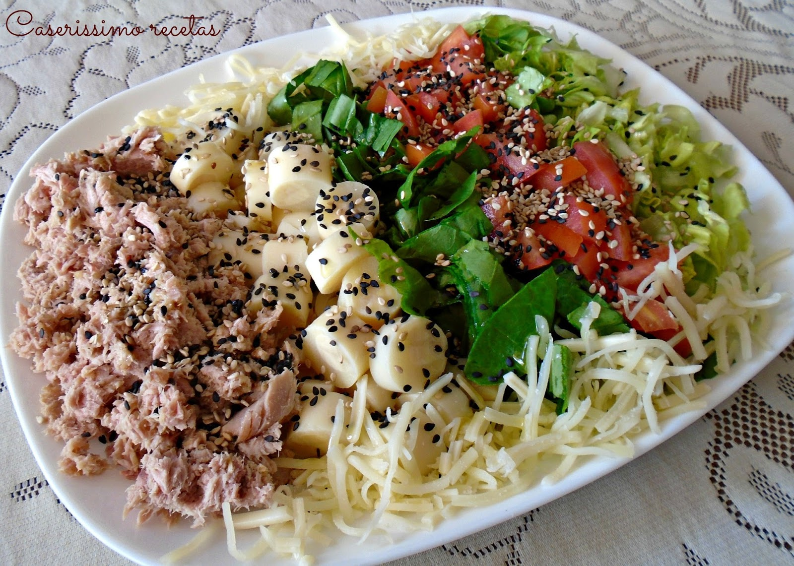

Descripcion
La ensalada de atún es una mezcla de típicamente tres ingredientes: atún, huevo y algún tipo de mayonesa o sucedáneo, como mostaza. El atún empleado suele ser precocinado, enlatado y conservado con agua o aceite. Es frecuente untar la ensalada entre dos rebanadas de pan para obtener un sándwich de ensalada de atún.
